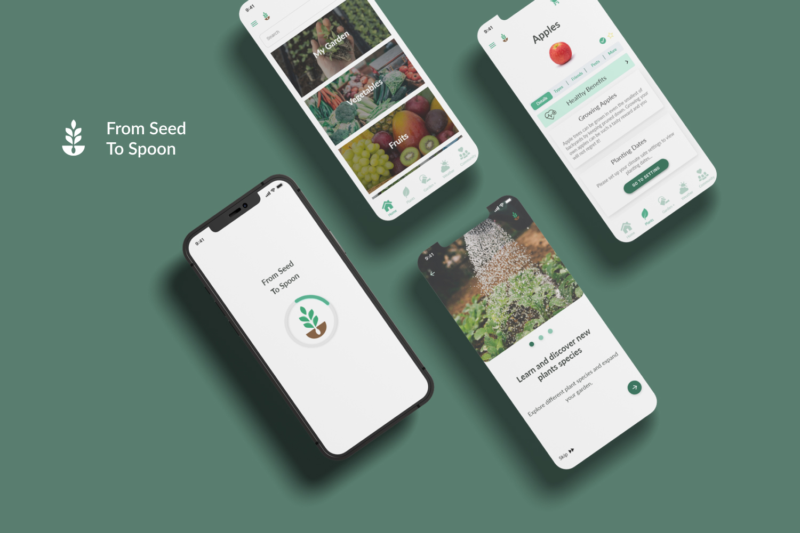
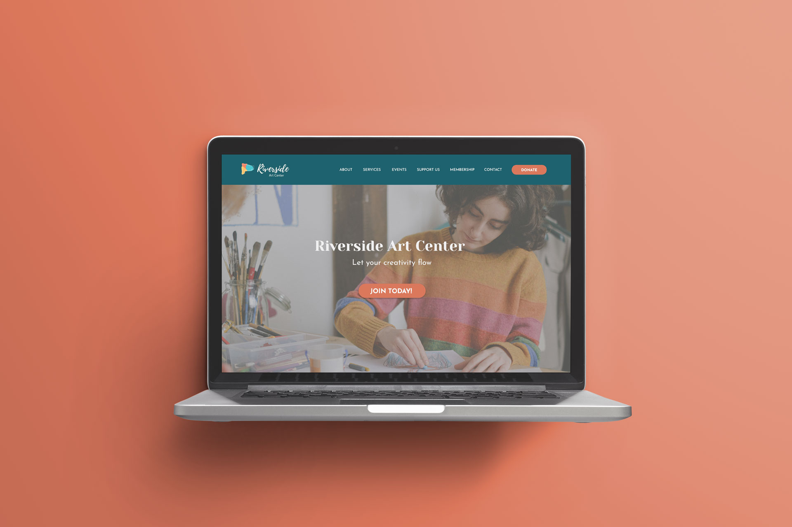
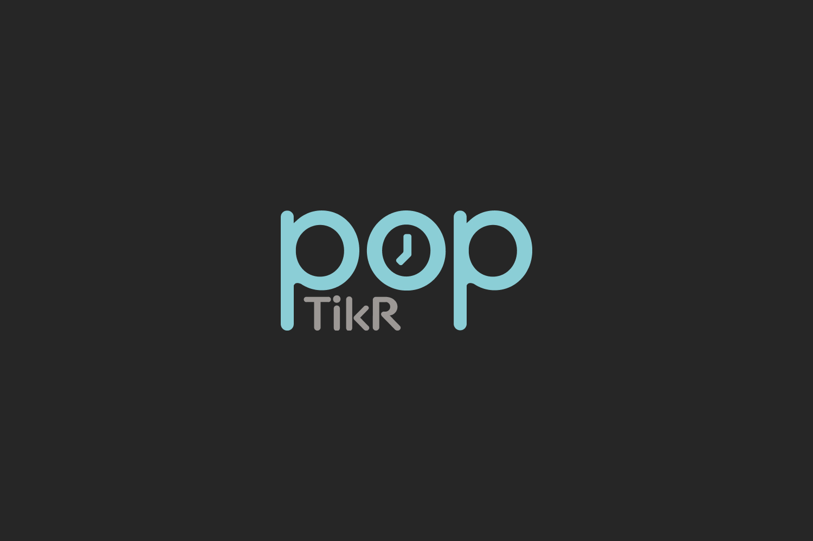

Portfolio
In this portfolio, you will find a selection of my best work, showcasing my expertise in user research, wireframing, prototyping, visual design, responsive design, and web development. Each project highlights my ability to tackle complex design challenges and to take a user-centered approach to design. Collaborating effectively with clients and team members, I deliver solutions that meet the needs of users while aligning with business objectives.

Complete branding and redesign of an app, using UX research and best practices to optimize and enhance the user experience.
Branding • UI UX Design

Rebranding and redesigning an existing website using software tools such as Adobe Illustrator, Photoshop, and Figma.
Branding • Web Design

Responsive design and interactive prototype created on Adobe XD, utilized for user testing and to optimize the user experience.
Branding • UI UX Design

Designing new mobile application features from the ground up.
UI Design • Graphic Design • Motion Design